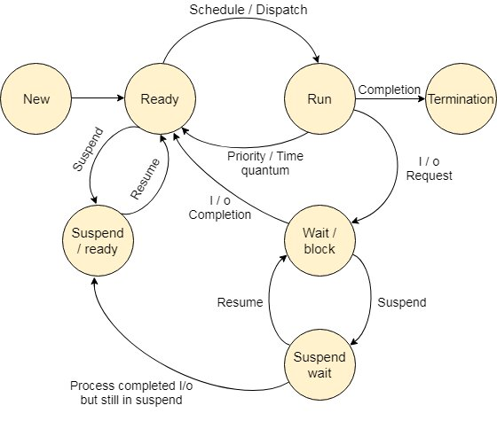

Process States

- The process, from its creation to completion, passes through various states. The minimum number of states is five.
- The names of the states are not standardized although the process may be in one of the following states during execution.
New
- A program which is going to be picked up by the OS into the main memory is called a new process.
Ready
- Whenever a process is created, it directly enters in the ready state, in which, it waits for the CPU to be assigned. The OS picks the new processes from the secondary memory and put all of them in the main memory
- The processes which are ready for the execution and reside in the main memory are called ready state processes. There can be many processes present in the ready state.
Running
- One of the processes from the ready state will be chosen by the OS depending upon the scheduling algorithm. Hence, if we have only one CPU in our system, the number of running processes for a particular time will always be one. If we have n processors in the system then we can have n processes running simultaneously.
Block or wait
- From the Running state, a process can make the transition to the block or wait state depending upon the scheduling algorithm or the intrinsic behavior of the process.
- When a process waits for a certain resource to be assigned or for the input from the user then the OS move this process to the block or wait state and assigns the CPU to the other processes.
Completion or termination
- When a process finishes its execution, it comes in the termination state. All the context of the process (Process Control Block) will also be deleted the process will be terminated by the Operating system.
Suspend ready
- A process in the ready state, which is moved to secondary memory from the main memory due to lack of the resources (mainly primary memory) is called in the suspend ready state.
- If the main memory is full and a higher priority process comes for the execution then the OS have to make the room for the process in the main memory by throwing the lower priority process out into the secondary memory. The suspend ready processes remain in the secondary memory until the main memory gets available.
Suspend wait
- Instead of removing the process from the ready queue, it's better to remove the blocked process which is waiting for some resources in the main memory. Since it is already waiting for some resource to get available hence it is better if it waits in the secondary memory and make room for the higher priority process. These processes complete their execution once the main memory gets available and their wait is finished.
Operations on the Process
Creation
- Once the process is created, it will be ready and come into the ready queue (main memory) and will be ready for the execution.
Scheduling
- Out of the many processes present in the ready queue, the Operating system chooses one process and start executing it. Selecting the process which is to be executed next, is known as scheduling.
Execution
- Once the process is scheduled for the execution, the processor starts executing it. Process may come to the blocked or wait state during the execution then in that case the processor starts executing the other processes.
Deletion/killing
- Once the purpose of the process gets over then the OS will kill the process. The Context of the process (PCB) will be deleted and the process gets terminated by the Operating system.